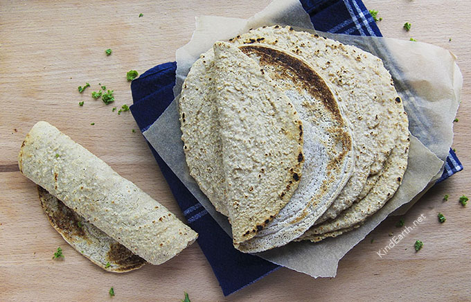

Home
Oat Wrap

Description
This is a simple recipe I have been following since I started my weight loss journey. It is a quick and easy recipe to make your own healthy wrap that can make dieting a lot easier.
Ingredients
- 100 gm (1 Cup) of rolled oats.
- 200 gm of warm water
- Half tsp of Flax Seeds
- half tsp of Salt
- Spices to taste
Steps
- Grind the oats till you reach fine-powder texture
- In a new bowl, add the oats and pour the water gently
- Whisk them together well
- Add the Flax Seeds and Spices (optional)
- After the mixture is done. Leave it to rest for 10 minutes until it thickens
- Heat up a non stick frying pan
- After you make sure that the pan is well heated, bring the heat down to medium
- Pour a portion of the mix into the pan and make sure it is spread evenly
- Wait a few minutes until the bottom of the wrap is almost done
- Flip the wrap and let it cook for a few more minutes.
- Make sure not to raise the heat, in order to avoid a burnt outside and undercooked inside
- Take out the wrap and put it on a kitchen towel
- Cover it with another towel and repeat the steps till the mix is out